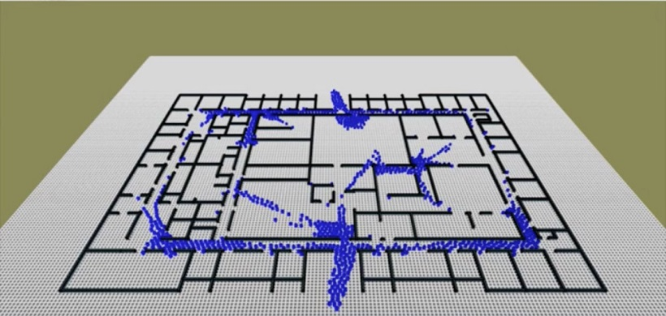
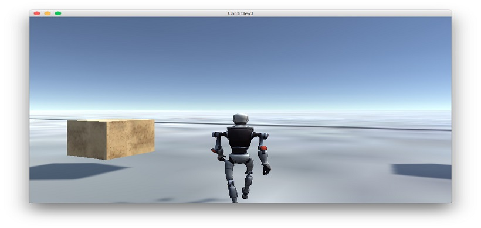

SteerSuite Assignments
Class
SteerLite
Description
SteerSuite is a suite of tools, code, and test cases for developing and evaluating steering behaviors. It provides an easy but powerful framework to develop your own AI, evaluate behaviors, share results with the community, and more.
Using SteerLite(a lighter version of SteerSuite), several algorithms were implemented.Such as:
1. GJK-EPA :
GJK algorithm detects collision between 2 convex shapes & EPA determines the distance two convex shapes have penetrated. This algorithm is used widely in gaming industry.2. Polygon Triangulation :
The algorithm above is used when objects are convex but it fails in case of concave objects. Generally, objects used in gaming industry concave. Polygon Triangulation divides the concave polygon in triangles and check if collision has occurred between them or not.3. Curves :
Curves such as Catmull-Rom and Hermite are used widely in various industry like game, car designing etc. Using SteerLite, we implemented both the splines and represented visually their behaviors.4. Path Finding :
Implemented A-Star using steerlite to represent the # of cells explored in a-star algorithm. And why this is better than other path finding techniques available.5. Social Forces :
Urban Planning and various other industry require to simulate real world crowd behavior in a simulated environment. Social Forces is the latest such model where different forces are applied to generate real crowd behavior. In the end, combining all the algorithms implemented above(A-Star, Social Forces, Curve, Collision Detection) to measure performance in various models like airplane,office-complex etc.Blog Link
GIT Link
Please visit the blog page for more description and videos.
Unity Assignments & Report on Behavior Authoring
Class
Unity